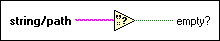

Empty String/Path? Function
Owning Palette: Comparison Functions
Requires: Base Development System
Returns TRUE if string/path is an empty string or an empty path. Otherwise, this function returns FALSE. This function is also designed to work with variants, pictures, and DSC tags.
The connector pane displays the default data types for this polymorphic function.

 Add to the block diagram Add to the block diagram |
 Find on the palette Find on the palette |